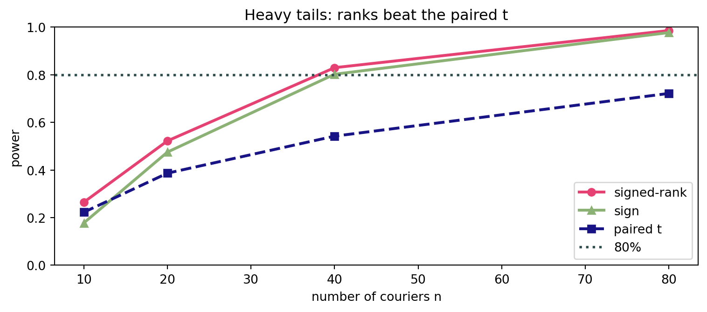
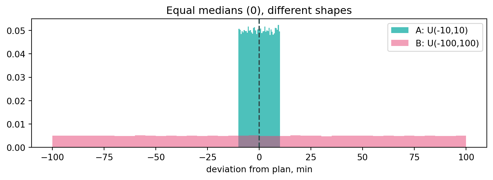

rng = np.random.default_rng(1)
n_c = 24
before = delivery(median=38, sigma=0.25, n=n_c, rng=rng) # min, before
after = before * rng.lognormal(np.log(0.93), 0.10, n_c) # ~7% fasterPractice 8
Nonparametric tests for A/B
What we do today
Earlier practices compared groups by means (\(z\)-, \(t\)-tests) or by categories (\(\chi^2\)). But product metrics — delivery time, revenue, session length — are almost always skewed with outliers, so the mean misleads. Today: the family of nonparametric tests that look at direction and order, not magnitude:
- sign test — only the direction of each change (binomial);
- Wilcoxon signed-rank — ranks the sizes of paired changes;
- Mann–Whitney — compares two independent groups by ranks.
We build A/B guardrails for the GreenBowl delivery app (the same one as in Practices 4–7) and separately dissect Mann–Whitney’s main trap: what happens when the medians are equal but the distribution shapes are not.
1 Part I — Sign test: did it get faster?
Case. GreenBowl turned on route optimisation. Each of 24 couriers worked a week before and a week after. This is a paired (crossover) design: the same couriers twice, so the groups are not independent —
ttest_indor Mann–Whitney do not apply. We look at the within-pair difference \(d_i\).
1.1 The tool: sign_test
The simplest idea — drop the magnitude, keep only the sign of the difference. The count of improvements under \(H_0\) behaves like a fair coin: \(T = \#\{d_i > 0\} \sim \text{Binom}(n, \tfrac12)\).
def sign_test(before, after, alpha=0.05):
"""Sign test: did the metric decrease (after < before)?"""
d = np.asarray(before, float) - np.asarray(after, float) # >0 => got faster
d = d[d != 0] # drop zeros
n, k = len(d), int((d > 0).sum())
p = binomtest(k, n, 0.5, alternative="greater").pvalue
return {"k": k, "n": n, "p": p,
"verdict": "reject H0" if p < alpha else "keep H0"}
r = sign_test(before, after)
print(f"improved {r['k']}/{r['n']} couriers, p = {r['p']:.4f} → {r['verdict']}")improved 22/24 couriers, p = 0.0000 → reject H0No assumption about the distribution — only courier independence. The price: we ignore how much faster, so it is the least powerful of the three.
Code
# Monte-Carlo: sign-test FPR under H0 (differences symmetric around 0)
fpr = prate(lambda n, r: r.normal(0, 1, n), n=n_c, test="sign")
print(f"sign-test FPR (n={n_c}): {fpr['rate']:.3f} "
f"CI={tuple(round(c, 3) for c in fpr['ci'])}")sign-test FPR (n=24): 0.017 CI=(0.012, 0.023)2 Part II — Wilcoxon signed-rank: adding magnitude
The sign test throws away the size of each change. Wilcoxon ranks the absolute differences and re-attaches the signs: \(W = \sum_i \text{rank}(|d_i|)\cdot\text{sign}(d_i)\). A few large improvements now outweigh many tiny ones — the test is more powerful.
def signed_rank(before, after, alpha=0.05):
"""Wilcoxon signed-rank test (paired)."""
d = np.asarray(before, float) - np.asarray(after, float)
nz = d[d != 0]
W = float(np.sum(rankdata(np.abs(nz)) * np.sign(nz)))
p = wilcoxon(before, after, alternative="greater").pvalue
return {"W": W, "p": p,
"verdict": "reject H0" if p < alpha else "keep H0"}
print("sign :", sign_test(before, after))
print("signed-rank :", signed_rank(before, after))sign : {'k': 22, 'n': 24, 'p': np.float64(1.7940998077392578e-05), 'verdict': 'reject H0'}
signed-rank : {'W': 230.0, 'p': np.float64(0.0002472400665283203), 'verdict': 'reject H0'}Code
# Power on HEAVY-TAILED differences (Student-t, df=2) with a shift
sizes = [10, 20, 40, 80]
curves = {t: [prate(lambda n, r: 0.7 + r.standard_t(2, n), nn, test=t)["rate"]
for nn in sizes] for t in ("sr", "sign", "pt")}
fig, ax = plt.subplots(figsize=(8, 3.6))
ax.plot(sizes, curves["sr"], "o-", color=red_pink, lw=2.3, label="signed-rank")
ax.plot(sizes, curves["sign"], "^-", color=green, lw=2.3, label="sign")
ax.plot(sizes, curves["pt"], "s--", color=blue, lw=2.3, label="paired t")
ax.axhline(0.8, color=slate, ls=":", lw=2, label="80%")
ax.set_xlabel("number of couriers n"); ax.set_ylabel("power")
ax.set_ylim(0, 1); ax.legend(); ax.set_title("Heavy tails: ranks beat the paired t")
plt.tight_layout(); plt.show()
3 Part III — Mann–Whitney: two independent groups
Case. A classic A/B: half the orders go through the old dispatcher (control), half through the new one (test). The metric — delivery time, min — is heavily skewed. The groups are independent (different orders), so Mann–Whitney applies.
rng = np.random.default_rng(3)
control = delivery(median=40, sigma=0.5, n=120, rng=rng)
testg = delivery(median=35, sigma=0.5, n=120, rng=rng) # new one is faster3.1 The tool: mw_report
def mw_report(a, b, alpha=0.05):
"""Mann-Whitney for two independent groups + effect size P(a<b)."""
res = mannwhitneyu(a, b, alternative="two-sided")
na, nb = len(a), len(b)
p_a_lt_b = 1 - res.statistic / (na * nb) # P(a<b): a is faster than b
return {"U": float(res.statistic), "p": res.pvalue, "P(a<b)": p_a_lt_b,
"verdict": "reject H0" if res.pvalue < alpha else "keep H0"}
print(mw_report(control, testg)){'U': 8164.0, 'p': np.float64(0.07318944472031981), 'P(a<b)': np.float64(0.4330555555555555), 'verdict': 'keep H0'}P(a<b) is the “probability of superiority”: the share of pairs where the control order is slower than the test order. \(0.5\) means “no effect”.
Code
skew = lambda n, r: delivery(40, 0.6, n, r) # one skewed law
fpr = rate(skew, skew, 80, 80, test="mw") # H0: identical groups
pw_mw = rate(lambda n, r: delivery(40, 0.6, n, r),
lambda n, r: delivery(34, 0.6, n, r), 80, 80, test="mw")["rate"]
pw_t = rate(lambda n, r: delivery(40, 0.6, n, r),
lambda n, r: delivery(34, 0.6, n, r), 80, 80, test="welch")["rate"]
print(f"MW FPR on skewed equal groups: {fpr['rate']:.3f} "
f"CI={tuple(round(c, 3) for c in fpr['ci'])}")
print(f"power (median 40 vs 34): MW={pw_mw:.2f} Welch t={pw_t:.2f}")MW FPR on skewed equal groups: 0.046 CI=(0.038, 0.056)
power (median 40 vs 34): MW=0.36 Welch t=0.324 Part IV — The shape trap: equal medians, different shapes
Case. The new dispatcher keeps the same median delivery time but makes it far more variable: some orders arrive very early, some very late. Model the deviation from the planned time (min): \(A \sim U(-10, 10)\) (control, tight), \(B \sim U(-100, 100)\) (new, “swingy”).
rng = np.random.default_rng(5)
A = rng.uniform(-10, 10, 100_000)
B = rng.uniform(-100, 100, 100_000)
print(f"median A = {np.median(A):.2f}, median B = {np.median(B):.2f}")
print(f"P(A < B) ≈ {np.mean(A < B):.3f}")
fig, ax = plt.subplots(figsize=(8, 3))
ax.hist(A, bins=40, density=True, color=turquoise, alpha=0.8, label="A: U(-10,10)")
ax.hist(B, bins=40, density=True, color=red_pink, alpha=0.5, label="B: U(-100,100)")
ax.axvline(0, color=slate, ls="--"); ax.set_xlabel("deviation from plan, min")
ax.legend(); ax.set_title("Equal medians (0), different shapes"); plt.tight_layout(); plt.show()median A = 0.01, median B = -0.24
P(A < B) ≈ 0.499
4.1 Equal samples: does Mann–Whitney hold its level?
gA = lambda n, r: r.uniform(-10, 10, n)
gB = lambda n, r: r.uniform(-100, 100, n)
eq = rate(gA, gB, 30, 30, test="mw", n_exps=3000)
print(f"Mann-Whitney FPR, n=30+30: {eq['rate']:.3f} "
f"CI={tuple(round(c, 3) for c in eq['ci'])}")Mann-Whitney FPR, n=30+30: 0.095 CI=(0.085, 0.106)The medians are equal, yet the FPR is about 10% — twice the promised 5%. The test falsely declares a difference even though there is none in location.
4.2 Unequal samples: it gets worse
print("nx ny MW Welch t Brunner-Munzel")
for nx, ny in [(30, 30), (10, 100), (100, 10), (20, 200), (200, 20)]:
mw = rate(gA, gB, nx, ny, test="mw", n_exps=3000)["rate"]
tt = rate(gA, gB, nx, ny, test="welch", n_exps=3000)["rate"]
bm = rate(gA, gB, nx, ny, test="bm", n_exps=3000)["rate"]
print(f"{nx:<4d} {ny:<4d} {mw:5.3f} {tt:5.3f} {bm:5.3f}")nx ny MW Welch t Brunner-Munzel
30 30 0.095 0.052 0.053
10 100 0.000 0.052 0.055
100 10 0.277 0.062 0.043
20 200 0.000 0.051 0.049
200 20 0.217 0.050 0.055Nonparametric A/B checklist
If even one answer is “no”, it is too early to trust the conclusion.